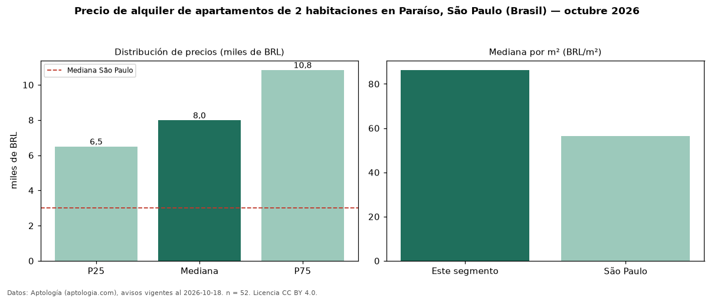

Precio de alquiler de apartamentos de 2 habitaciones en Paraíso, São Paulo (Brasil) — octubre 2026
BRL 7.990 al mes es el canon mediano de apartamentos de 2 habitaciones en alquiler en Paraíso, São Paulo (Brasil) (n = 52 avisos). Eso es 166 % por encima de la mediana de São Paulo para apartamentos de 2 habitaciones (BRL 3.000). Por metro cuadrado, la mediana es BRL 86,31/m² al mes (n = 52 avisos con área), 53 % por encima de São Paulo (BRL 56,33/m²). Son 35 % de los 148 avisos de apartamentos en alquiler de la zona, cuya mediana general es BRL 7.500 (+7 %). El área mediana anunciada es 88 m². La cuota de mantenimiento o condominio mediana declarada es BRL 1.882 al mes (n = 52), aparte del canon. La mitad central de los avisos va de BRL 6.500 a BRL 10.848 (razón 1,7), una dispersión moderada. Datos: Aptología (aptologia.com), CC BY 4.0 — https://www.aptologia.com/br/aluguel/sao-paulo. Archivos: PDF, CSV con las cifras y gráfica PNG.

| Avisos únicos | 52 |
|---|---|
| Percentil 25 | COP 6.500 |
| Mediana | COP 7.990 |
| Percentil 75 | COP 10.847 |
| Mediana por m² | COP 86 |
Fuente: avisos vigentes de portales inmobiliarios recopilados por Aptología, deduplicados (mínimo 30 avisos únicos por celda). Precios pedidos, no cerrados. Fecha: 2026-10-18.